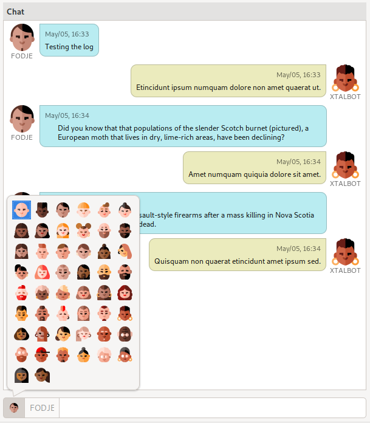
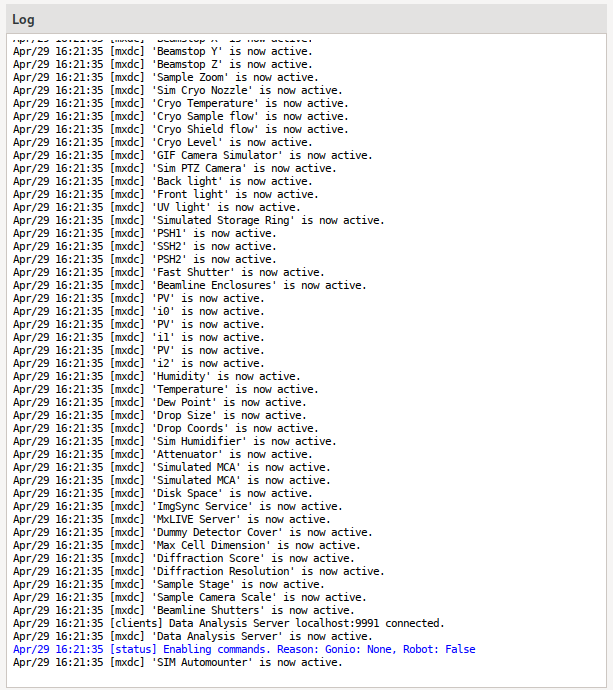

Chat and Log
The Chat and Log features in MxDC have been moved into a separate view accessible by selecting the chat icon on the header bar. The view is divided into two regions, the Chat on the left, and the Log on the right.
Chat Tool
The Chat tool provides a simple mechanism for instant communication between users and staff, when staff are available on the beamline. This supplements rather than replaces existing email and phone methods of communication
Messages can be composed using the entry at the bottom of the tool, and submitted by pressing return key in entry. The chat functionality is only available when MxDC is running and staff are using the MxDC Hutch Application. Users can select custom avatars to personalize the chat.
Log Viewer
The Log displays log messages from MxDC. The messages are color-coded based on importance.
